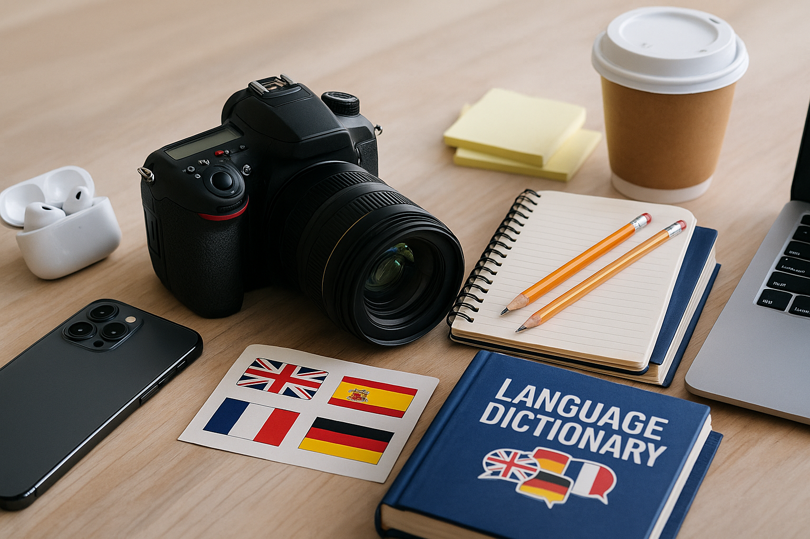

My Hobbies
- Playing online games – I love online games, and my top three are Mobile Legends, Call of Duty, and Clash Royale!
- Jogging/Walking every morning – I enjoy jogging and walking every morning to stay active, clear my mind, and maintain a healthy routine.
- Cooking – Cooking is one of my favorite hobbies. I love preparing meals, trying new recipes, and making food that brings comfort and joy
My Interests
- Technology and gadgets – Always tinkering with the latest apps and devices.
- Photography – Capturing moments and landscapes.
- Learning languages – Currently practicing Japanese.
